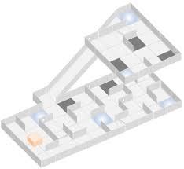

Le but du concours est de fabriquer et développer un robot capable de se déplacer dans un labyrinthe, et qu'il puisse repérer des victimes par deux moyens : la température grâce à un capteur infrarouge, et la vision par des lettres placées sur les murs du labyrinthe. Il devra ensuite déposer un "médikit" à coté de la victime.
Les principales questions qui ont été posées sont :
#1 Nous avons utilisé le logiciel GitHub qui permet de créer un projet informatique en ligne, et ainsi de mettre en commun nos codes en un clic.
#2 Nous avons réussi grâce à notre expérience passée et grâce à internet à construire ce robot.
#3 Leïly et moi même avions déjà des compétences en informatique, mais j'avais plus d'expériences dans le languages C et Leïly avait déjà fait des montages avec Arduino. Le découpage des tâches fut donc naturel : Leïly fit le montage et le développement des bibliothèques, Quitterie fit la rédaction des dossiers, et quant à moi, j'ai développé le code principal contenant toute la logique d'action du robot.
#4 Nous avons reçu tout les constituants de notre robot assez tard. Nous n'avons pu donc finir le montage du robot que fin février. Cette contrainte de temps nous a donc demander quelques concessions : le barème n'offre que peu de points au médikit, nous avons donc choisi de ne pas nous en occuper.
De plus, la lecture des lettres demandent d'importantes connaissances techniques, nous avons donc choisis de prioriser la détection des victimes via la chaleur.